Charades · Animals · page 10/13 · all packs
Reject an image by adding its slug to public/charades/charades-animals/reject.txt (append ! to keep it word-only), then re-run node scripts/genimages.mjs.
1 2 3 4 5 6 7 8 9 10 11 12 13 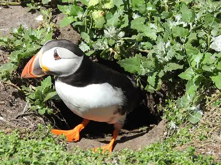
Puffin puffinCC BY 2.0 · ianpreston · source 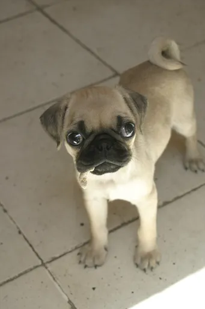
Pug pugPublic domain · No machine-readable author provided. Rtamayo~commonswiki assumed (based on copyright claims). · source 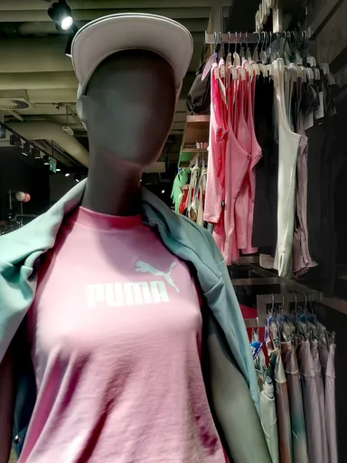
Puma pumaCC BY-SA 4.0 · Silar · source 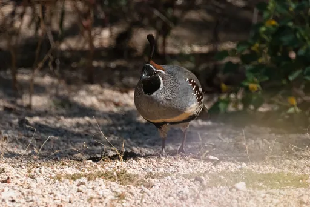
Quail quailPublic Domain Mark · Joshua Tree National Park · source 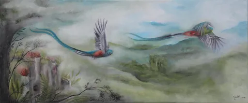
Quetzal quetzalPublic Domain Mark · * La Strada Fellini * braunpanther * · source 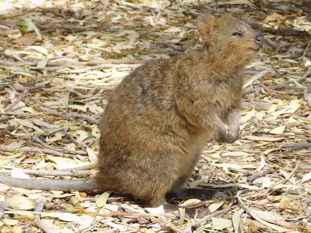
Quokka quokkaPublic Domain Mark · odd.organisms · source 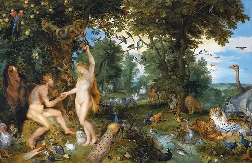
Rabbit rabbitPublic domain · Peter Paul Rubens / Jan Brueghel the Elder · source 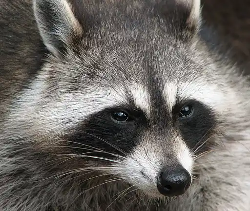
Raccoon raccoonCC BY-SA 2.5 · Darkone · source 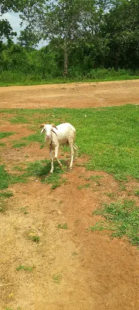
Ram ramCC BY-SA 4.0 · Okinartz · source 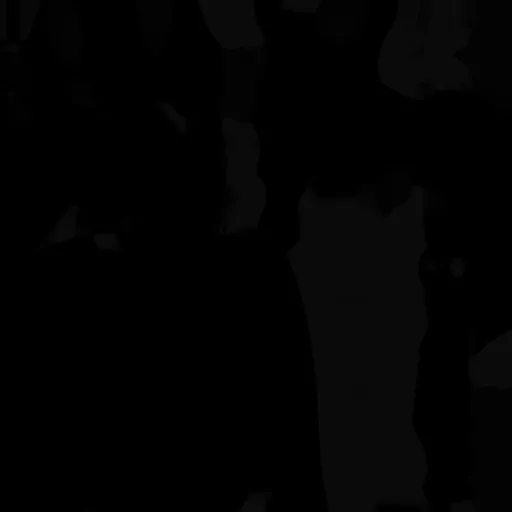
Rat ratCC0 · Sean Buckley via Poly Haven (https://polyhaven.com/all?a=Sean%20Buckley / https://web.archive.org/web/20230912131747/https://polyhaven.com/all?a=Sean%20Buckley) · source 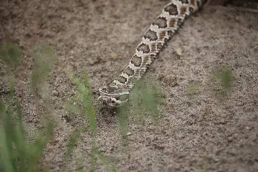
Rattlesnake rattlesnakePublic domain · USFWS - Pacific Region · source 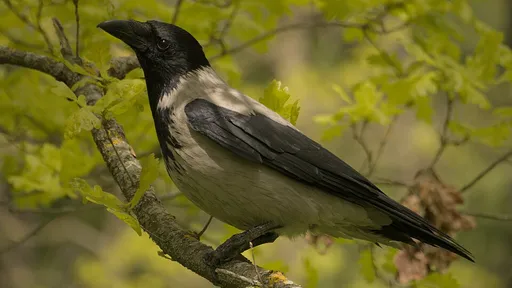
Raven ravenCC BY-SA 4.0 · DuoDro · source 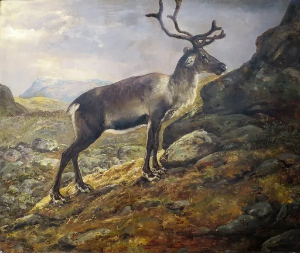
Reindeer reindeerPublic domain · Johan Christian Dahl / Johann Siegwald Dahl · source 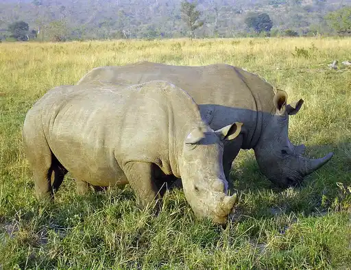
Rhino rhinoPublic domain · Komencanto, modified by ArtMechanic · source 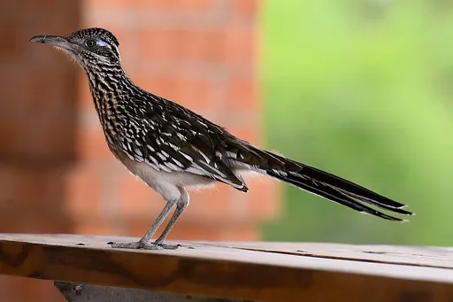
Roadrunner roadrunnerCC BY 2.0 · lwolfartist · source 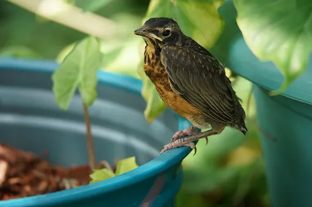
Robin robinCC BY 4.0 · Roger Heslop · source 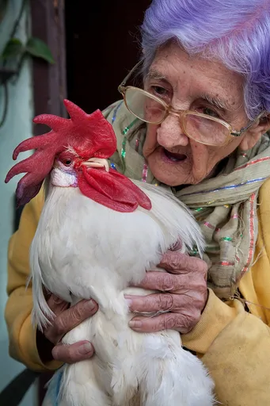
Rooster roosterCC BY-SA 3.0 · Jorge Royan · source 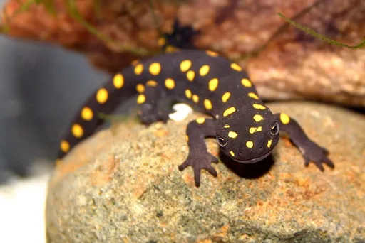
Salamander salamanderCC0 · Bozygocreative · source 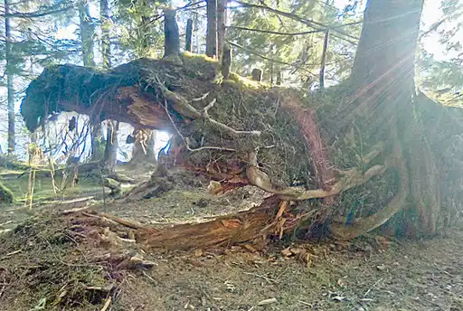
Salmon salmonCC BY-SA 4.0 · Fishinphoto · source 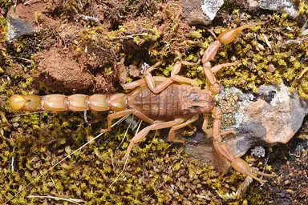
Scorpion scorpionCC BY-SA 4.0 · Mario Modesto Mata · source 1 2 3 4 5 6 7 8 9 10 11 12 13